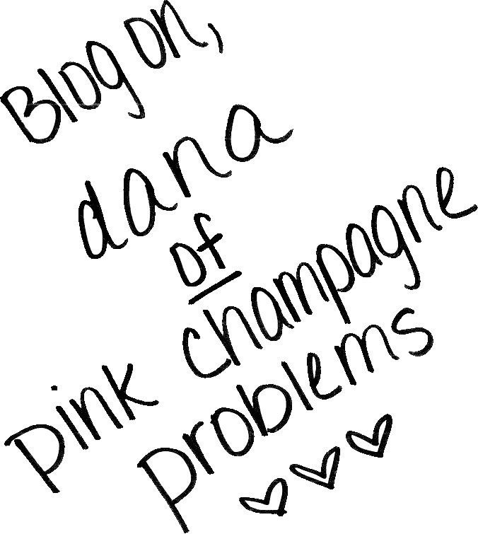

Pink Champagne Problems by Dana Mannarino
A champagne problem is defined as “The need to make a decision where both alternatives are desirable.” Dana Mannarino runs into a lot of these with her blog Pink Champagne Problems. She posts for herself and her own happiness and her true passion shines through. Her preppy with a pinch of edge personal style is unique and refreshing. Learn more about Dana and her Pink Champagne Problems with Blogspotter.
How long have you been blogging? I have been blogging since September 2012!
Why did you start Pink Champagne Problems? I originally started Pink Champagne Problems as part of my university’s student blogging program. It was all about Marymount and a fashion student’s perspective, but I soon felt that I wasn’t being super true to myself by only talking about my school. So, I started talking outfit pictures and the rest is kind of history!
How did you come up with the name for your blog? I was sitting in Shake Shack in Washington D.C., and I said something absolutely ridiculous – and my friend said, “That’s such a champagne problem.” And that’s really how Pink Champagne Problems was born (the pink was added because… well why not?)
Have you always been interested in fashion? Would you like to explore any other aspects of the industry? I don’t think there was a time in my life when I doubted that I would end up in the fashion industry. My older sister currently works in the fashion industry, and I definitely want to follow in her footsteps. So far, I would like to explore these areas – Merchandising, Public Relations, Marketing/Social Media, and Sales/Buying. Fingers crossed that I’ll land a job in one of these fields by graduation!
How would you describe your personal style? Over the past few years, my style has evolved into a pretty classic niche. I tend to buy pieces that I know I will be able to wear for years. I’d like to say that I gravitate towards the preppy looks, but like to add my own flare to it – which might be a random edgy piece or a crazy statement necklace.
Does living in New York City influence your style at all? Absolutely. It’s the most diverse city in the world when it comes to fashion. Sometimes I’ll walk past someone and be like, “Wow, she looks great! How in the world does she pull that off?” I wish I had the guts to ask people where they bought some of their things!
Where are your favorite places to shop and why? J.Crew is my absolute favorite store (over half my wardrobe is definitely J.Crew). I can find everything I need there, and it really compliments my style – especially since they’re trying to be more edgy while remaining true to the classic prep look. I’ve also been really impressed with Loft lately! And ASOS and Zara are my go-tos when I need some edgy inspiration.
"I don't have the money to buy big-ticket items, and I certainly don't have a big enough following for a ton of brands to sponsor my blog by giving me products to style. But you know what? I'm okay with that." — Dana Mannarino
What main message would you like to convey via Pink Champagne Problems? I’m just an average 21 year old college senior. I don’t have the money to buy big-ticket items, and I certainly don’t have a big enough following for a ton of brands to sponsor my blog by giving me products to style. But you know what? I’m okay with that. I genuinely love writing and blogging and sharing what inspires me with my readers. I really believe that fashion is my passion and if I could inspire a few people by what I wear, that’s super awesome – and most of the time my readers give me some kind of inspiration too!
What is your main source of style inspiration? Pinterest. Other bloggers. My sister (that girl can pull off ANYTHING).
Does social media play a big part in your blogging process? Absolutely. I use Twitter and Facebook to post links to my blog posts. I use Instagram to highlight my outfit posts. I’ve been starting to use Pinterest more to pin the looks from my blog.
How much does street style influence you? How much does runway fashion influence you? I’d say street style doesn’t influence me all that much, aside from admiring the looks. I don’t really remember what I see on the streets, so I don’t think about trying to recreate a look. Runway fashion definitely influences my style because it’s where trends and color palates are created.
Why did you want to feature other bloggers in some of your posts? I really love how many amazing people I’ve met through blogging! I think it switches things up a bit – do people really want to read what I have to say every day?! It also is a great way to gain a bigger following, and also introduce my readers to new bloggers.
If you could start your blogging journey all over, would you change anything? I would probably start doing outfit posts from the beginning. I realized I could have established a blog image of being a fashion blogger then, instead of almost a year later.
What is the coolest thing that’s happened since you started? Seriously, how many amazing people I’ve “met” through blogging and social media. I’ve become more confident in my blog, and love connecting with other bloggers. Some of us are even looking to meet up this summer, which I’m really excited about!
Any advice for aspiring bloggers? Just go for it and have fun. You’re not going to see results overnight, but if it’s something you’re truly passionate about, you’ll find it easy to blog for yourself and for your happiness – the readers will come along.
